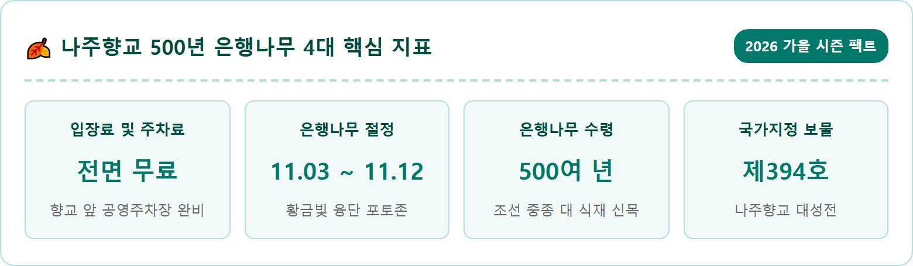
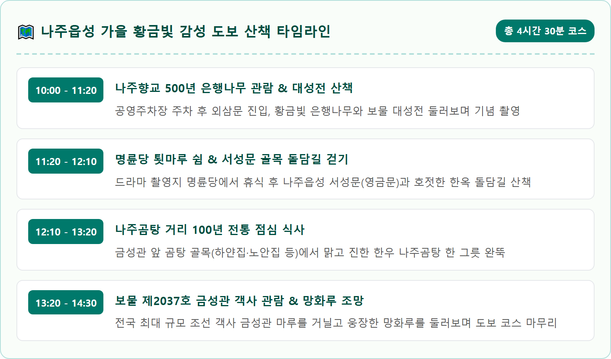
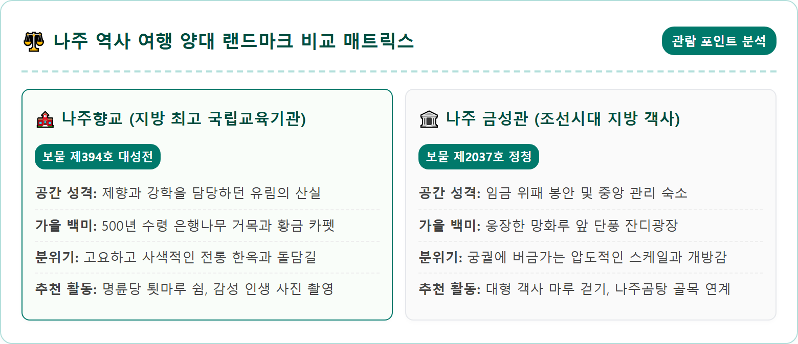
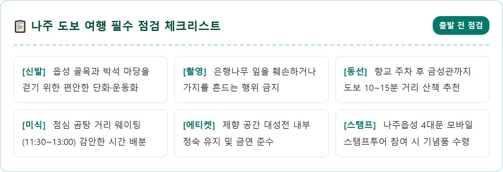
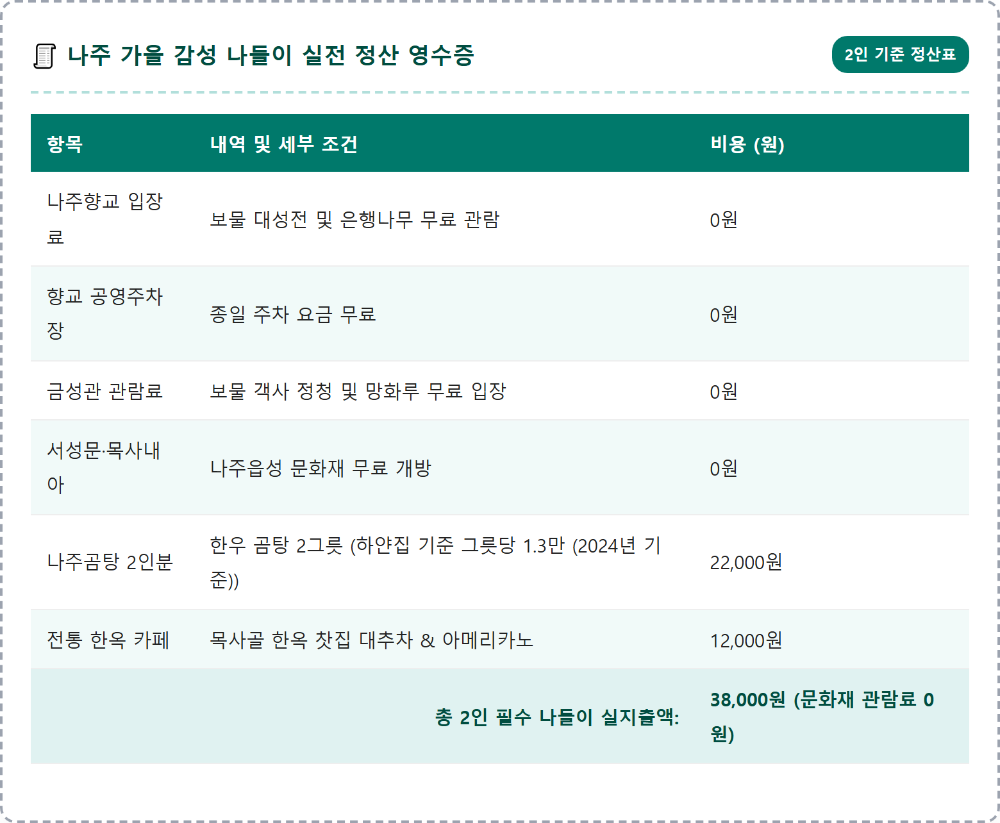
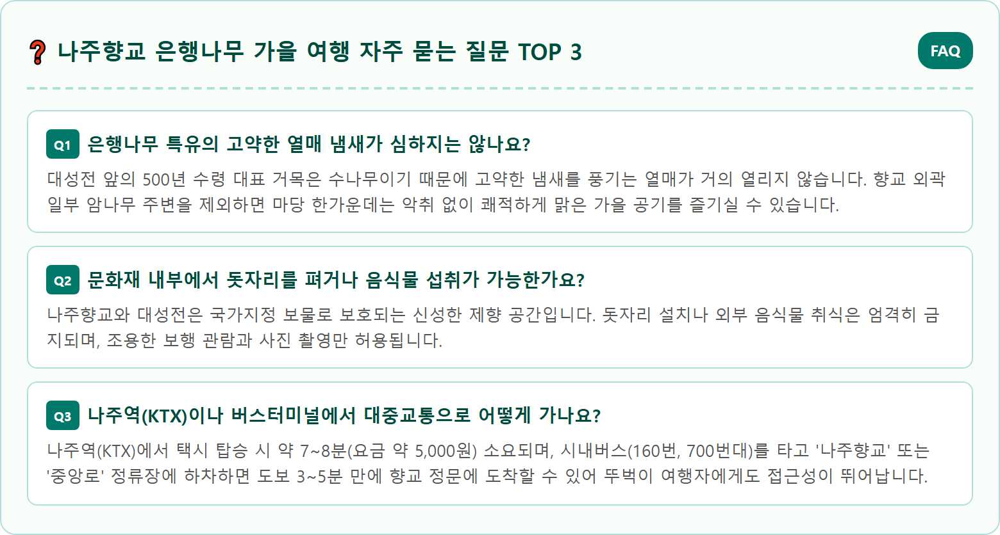

A breathtaking, photorealistic eye-level photograph of Naju Hyanggyo Confucian School in South Jeolla Province during the golden autumn foliage peak in early November. A magnificent, 500-year-old giant ginkgo tree with brilliant, vibrant canary yellow leaves stands majestically in the traditional courtyard in front of Daeseongjeon hall, a historic Joseon-era wooden structure with weathered wooden pillars and dark curved tiled roof. Golden ginkgo leaves carpet the stone courtyard ground and sit delicately on traditional black roof tiles. Soft golden morning autumn light streams through the ginkgo canopy. Traditional Korean tranquil scholarly atmosphere, ultra high resolution 8k photography, shot on full frame camera, 1:1 aspect ratio.





